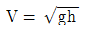
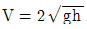
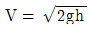
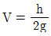
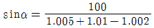
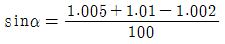
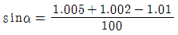
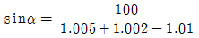

사출(프레스)금형산업기사 (2004-09-05 기출문제)
1과목: 금형설계
1. 인슐레이티드 러너의 장점이 아닌 것은?
- 사이클이 지연된다.
- 설계가 간단하다.
- 컨트롤이 불필요하다.
- 색교환이 빠르다.
(정답률: 71%)

2. 재료의 인장시험시 측정할 수 있는 항복점 연신율이 크게되면 드로잉 성형시 플랜지 주변에 가는 줄모양의 결함이 발생하게 되는데 이 결함의 명칭은?
- 스트레처 스트레인(stretcher strain)
- 이어링(earing)
- 마찰흠(scratch)
- 스커핑(scuffing)
(정답률: 58%)
3. 크랭크 프레스의 기계적 성능은 능력에 따라 결정 한다. 그 능력은 3가지가 있다. 다음에서 관계가 없는 능력은?
- 크랭크능력
- 압력능력
- 토크능력
- 일의능력
(정답률: 71%)
4. 1회의 블랭킹 가공으로 양호한 전단단면을 얻을 수 있는 가공은 다음 중 어느것인가?
- 파인블랭킹
- 하이드로포밍
- 디프드로잉
- 하프블랭킹
(정답률: 89%)
5. 호칭치수 100㎜, 성형 수축율 3/1000 일 때 상온의 금형치수는 얼마로 가공해야 하나?
- 100.2㎜
- 100.5㎜
- 100.3㎜
- 100.7㎜
(정답률: 94%)
6. 프로그레시브 작업을 위한 스트립 레이아웃을 설계할 때 고려할 사항이 아닌 것은?
- 프레스 능력
- 재료 압연 방향
- 프레스 다이하이트
- 볼스터 크기
(정답률: 38%)
7. 투영면적이 120mm × 60mm인 상자형 성형품을 유효 사출압 460kgf/cm2로 성형하고자 할 때 사용 성형기의 형체력으로 가장 적합한 것은?(오류 신고가 접수된 문제입니다. 반드시 정답과 해설을 확인하시기 바랍니다.)
- 15 ton
- 25 ton
- 35 ton
- 45 ton
(정답률: 3%)
8. 종이나 천 등에 액체상태의 수지를 스며들게 하여 시트와 수지를 층상으로 하여 만드는 성형방법은?
- 이송 성형
- 적층 성형
- 사출 성형
- 압축 성형
(정답률: 90%)
9. 펀치나 다이에 전단각(shear angle)을 주는 목적 중 가장 알맞은 것은?
- 다이에 대한 펀치의 편심을 방지하기 위하여
- 전단 하중을 줄이기 위하여
- 전단면을 아름답게 하기 위하여
- 펀치 및 다이를 보호하기 위하여
(정답률: 83%)
10. U-굽힘금형에서 다이에 쿠션 패드를 설치하는 목적 중 가장 알맞은 것은?
- 스프링 백 현상을 방지하기 위하여
- 재료의 두께 변화를 방지하기 위하여
- 제품 밑부분의 만곡 현상을 방지하기 위하여
- 굽힘 가공력을 감소시키기 위하여
(정답률: 73%)
11. 판두께 0.5 mm인 규소강판에 지름 20 mm의 둥근 구멍을 블랭킹 하는 경우의 최대 전단하중은? (단, 규소강판의 전단저항은 45㎏f/mm2임)
- 450㎏f
- 900㎏f
- 1413㎏f
- 3140㎏f
(정답률: 56%)
12. 분할다이에서 다이블록(die block)의 고정방법중 바람직 하지 않는 것은 다음중 어느 것인가?
- 나사에 의한 고정
- 키에 의한 고정
- 용접에 의한 고정
- 쐐기에 의한 고정
(정답률: 92%)
13. 고정측형판과 가동측형판의 위치결정을 하는 부품은?
- 리터언핀
- 로케이트링
- 스푸루 로크핀
- 가이드핀
(정답률: 75%)
14. 보스 부분의 이젝팅에 가장 적합한 방식은?
- 이젝터 핀
- 이젝터 슬리브
- 스트리퍼 플레이트
- 에어 이젝트
(정답률: 60%)
15. 외측 언더컷 처리 금형에 해당되지 않는 것은?
- 분할 캐비티형
- 회전형
- 슬라이드 블록형
- 슬리이브형
(정답률: 39%)
16. 다음 러너 단면 형상 중에서 효율이 가장 좋은 것은?
- 사다리꼴 러너
- 원형 러너
- 반원형 러너
- 직사각형 러너
(정답률: 79%)
17. 블랭크 지름을 200㎜이라하고, 드로잉 직경을 60㎜로 성형할 때 드로잉비는 얼마인가?
- 0.30
- 0.43
- 2.33
- 3.33
(정답률: 66%)
18. 플래시 방지 대책과 거리가 먼 것은?
- 사출압력을 낮춘다.
- 받침판을 두껍게 한다.
- 수지온도를 높인다.
- 형조임력을 높인다.
(정답률: 65%)
19. 다음 중 볼부시가 있으며, 가이드 포스트가 4개인 다이세트의 형식은?
- DB
- FB
- DR
- FR
(정답률: 43%)
20. 폴리에틸렌은 어느 수지에 속하는가?
- 열경화성 수지
- 열가소성 수지
- 천연 수지
- 저분자 수지
(정답률: 71%)
2과목: 기계가공법 및 안전관리
21. 다음중 전기도금으로 Cu등을 적당한 두께로 도금한 모델은?
- 부식모델
- 전주모델
- 금속용사모델
- 금속모방모델
(정답률: 54%)
22. 드릴 구멍 또는 보링 구멍의 끝을 일정한 원통형 구멍으로 넓히는 작업은?
- 카운터 싱킹
- 카운터 보링
- 태핑
- 시이팅
(정답률: 76%)
23. 절삭저항 3분력의 크기로 가장 적당한 것은? (단, 탄소강을 초경합금으로 가공할 때 주분력 P1, 이송 분력 P2, 배분력 P3 으로 표시한다.)
- P1 ＞ P2 ＞ P3
- P1 ＞ P3 ＞ P2
- P2 ＞ P1 ＞ P3
- P3 ＞ P2 ＞ P1
(정답률: 69%)
24. 선반가공에서 테이퍼를 절삭하는 방법이 아닌 것은?
- 복식공구대 이용
- 심압대 센터를 편위시킴
- 백 기어를 사용
- 테이퍼 절삭장치 이용
(정답률: 61%)
25. 사인바(sine bar)로 정밀하게 측정할 수 있는 각도는 몇 도까지 인가?
- 25°
- 35°
- 45°
- 55°
(정답률: 75%)
26. 단조작업에서 자유낙하 할 때 낙하거리를 h, 중력가속도를 g, 해머의 타격속도를 V라 할때 타격속도를 구하는 식은 어느 것인가?




(정답률: 41%)
27. CNC 공작기계의 구성을 인체와 비교할 때 손과 발에 해당되는 것은?
- 서보 모터
- 유압 유닛
- 강전 제어반
- 기계 본체
(정답률: 65%)
28. 지름 200 mm의 로울러로 40 mm의 판재를 1회 열간압연하여 32 mm가 되었을 때 압하량은?
- 8 mm
- 20 mm
- 5 mm
- 15 mm
(정답률: 47%)
29. 프레스 가공의 분류 방법 중에서 전단가공에 속하지 않는 가공법은?
- 트리밍
- 쉐이빙
- 정밀타발
- 스웨이징
(정답률: 58%)
30. 금형을 용도별로 분류했을 때 주조형 금형에 속하지 않는 것은?
- 진공 성형형
- 셸몰드형
- 중력 주조형
- 로스트 왁스형
(정답률: 48%)
31. NC선반 프로그램 작성시 공작물의 회전수에 대한 지령은 다음 중 어느 코드를 사용하는가?
- G코드
- S코드
- T코드
- M코드
(정답률: 82%)
32. 금속표면처리 방법을 설명한 것 중 맞는 것은?
- 칼로라이징이란 금속표면에 크롬을 침투시켜 내식성을 증가한다.
- 크로마이징이란 금속표면에 알루미늄을 침투시켜 강도를 증가시킨다.
- 화염경화법이란 금속표면에 질소, 탄소막을 만드는 것이다.
- 실리콘나이징이란 금속표면에 규소를 침투시켜 내식성을 증가시킨다.
(정답률: 70%)
33. 눈금선의 간격 ℓ =0.5mm, 최소눈금 s=0.001mm인 마이크로 인디케이터의 배율 V는?
- 0.5
- 5
- 50
- 500
(정답률: 61%)
34. 절삭공구 재료로 사용하는 스텔라이트의 주성분은 다음 중 어느 것인가?
- W - C - Co - Cr
- W - C - Cu
- Co - Mo - C
- Co - C - W - Cu
(정답률: 73%)
35. 배럴속에 공작물을 넣고 회전시켜 끝 다듬질을 하는것은?
- 버니싱
- 샌드블라스팅
- 쇼트피닝
- 텀블링
(정답률: 38%)
36. 특수가공방법 중에서 스테인리스강이나, 알루미늄, 콘크리트, 내화벽돌등의 고속절단이 가능한 가공방법은?
- CNC 와이어컷 가공
- CNC 방전가공
- 고속 액체 제트 가공
- 고속숫돌 절단가공
(정답률: 49%)
37. CNC 선반에서 주축과 관계가 없는 기능은?
- M03
- M04
- M⑤
- M08
(정답률: 76%)
38. 리머 작업시 가장 적합한 작업 조건은?
- 드릴작업보다 고속으로 작업하고 이송은 작게 한다.
- 드릴작업보다 고속으로 작업하고 이송은 크게 한다.
- 드릴작업보다 저속으로 작업하고 이송은 크게 한다.
- 드릴작업과 비슷한 절삭속도로 하고 이송은 크게 한다.
(정답률: 66%)
39. 강의 펄라이트(pearlite)조직을 설명한 것 중 옳은 것은?
- 페라이트 + Fe3C 의 층상 혼합물
- γ고용체와 Fe3C 의 혼합물
- α 고용체와 γ고용체의 혼합물
- δ 고용체와 α 고용체의 혼합물
(정답률: 48%)
40. 공작물 주위에 정확한 간격으로 구멍을 뚫거나 기타 기계의 가공에 사용되며, 이들 작업을 수행하기 위하여 지그의 몸체 또는 플런저가 분할핀으로 사용되는 것은?
- 분할 지그 (indexing jig)
- 리프 지그 (leaf jig)
- 채널 지그 (channel jig)
- 박스 지그 (box jig)
(정답률: 94%)
3과목: 금형재료 및 정밀계측
41. 중심거리 100mm 사인바로 제품의 기울기를 측정하니 양쪽로 울러에 쌓여진 게이지 블록의 조합량이 각각 (1.002)와 (1.0⑤ + 1.01) 이었다면 기울기를 계산하는 식은?




(정답률: 71%)
42. 다음중 나사의 유효경을 측정하기에 가장 부적합한 측정기는?
- 투영기
- 형상측정기
- 공구현미경
- 외측마이크로미터와 삼침게이지
(정답률: 40%)
43. 발전기, 전동기, 변압기 등의 철심재료에 적합한 특수강은?
- 저탄소강에 Si를 첨가한 강
- 탄소강에 Pb 혹은 흑연을 첨가시켜 만든강
- 저탄소강에 Ni을 첨가시켜 만든강
- 탄소강에 Mn을 첨가한 강
(정답률: 31%)
44. 3차원 측정기의 프로브에서 광학계를 이용한 것으로, 접촉측정이 부적당하거나, 곤란한 얇은 물체 혹은 연한 물체, 작은 구멍의 좌표측정, 금긋기선의 위치 측정 등에 쓰이는 프로브는?
- 접촉식 프로브
- 비접촉식 프로브
- 전방향성 접촉신호 프로브
- 변위검출형 프로브
(정답률: 83%)
45. 단면적 A = 20mm2, 길이 ℓ =100 mm인 균일단면의 강봉을 측정압 P=1kgf으로 측정할 때 압축 탄성변형량은? (단, 강의 세로 탄성계수는 20 × 104 kgf/mm2 이다.)
- 0.1㎛
- 0.025㎛
- 0.25㎛
- 0.0⑤㎛
(정답률: 40%)
46. 공작물을 가공 무늬에 직각인 방향으로 절단했을때 그 절단 입구에 나타나는 요철의 곡선은?
- 거칠기 곡선
- 중심선 거칠기 곡선
- 단면곡선
- 파상도 곡선
(정답률: 68%)
47. 탄소강에서 펄라이트 조직중의 시멘타이트의 양은?
- 0.8%
- 12%
- 32%
- 88%
(정답률: 48%)
48. 다음 공구강 중 담금질 작업시 치수 변화가 크기 때문에 단순 형상의 금형재료로 적합한 것은?
- 탄소 공구강
- 저합금 공구강
- 내충격합금 공구강
- 고속도 공구강
(정답률: 66%)
49. 공장에서 측정기를 선정할 때 고려해야 할 사항으로 관련이 가장 적은 것은?
- 공차
- 제품 수량
- 측정범위
- 제품의 기계적 성질
(정답률: 42%)
50. 다음 한계 게이지의 종류 중 축용 한계 게이지는?
- 판형 플러그 게이지
- 봉(bar) 게이지
- 스냅(snap) 게이지
- 테보(tebo) 게이지
(정답률: 65%)
51. 다음 측정기 중에서 공작물의 실제치수를 직접 알 수 없는 측정기는?
- 버니어캘리퍼스
- 마이크로미터
- 하이트 게이지
- 다이얼 게이지
(정답률: 71%)
52. 다음중 오토콜리메이터로 측정할 수 없는 항목은?
- 진직도
- 평행도
- 직각도
- 표면 거칠기
(정답률: 83%)
53. 침탄과 동시에 질화도 되므로 침탄질화법 또는 청화법이라고 하는 열처리법은?
- 고체 침탄법
- 액체 침탄법
- 가스 침탄법
- 전해 경화법
(정답률: 37%)
54. 다음의 수지들 중 열경화성수지가 아닌 것은?
- 페놀 수지
- 에폭시 수지
- 멜라민 수지
- 폴리에틸렌
(정답률: 82%)
55. 회주철에 대한 설명 중 틀린 것은?
- 인장력에 약하고 깨지기 쉽다.
- 탄소강에 비해 진동에너지의 흡수가 되지 않는다.
- 주조 및 절삭성이 우수하다.
- 유동성이 좋아 복잡한 형태의 주물을 만들 수 있다.
(정답률: 49%)
56. 냉간가공용 다이스강이 아닌 것은?
- Cr-Mo-W-V 강
- Ni-Cr-Mo-V 강
- W-Cr-Mn 강
- W-Cr 강
(정답률: 39%)
57. 펄라이트(Pearlite)의 생성되는 과정에서 틀린 것은?
- Fe3C의 핵이 성장한다.
- α 가 생긴 입자에 Fe3C가 생긴다.
- γ의 결정립계에 Fe3C의 핵이 생긴다.
- Fe3C의 주위에 γ 가 생긴다.
(정답률: 21%)
58. 알루미늄 합금으로 점도가 좋으며 대량 생산을 할 경우 어느 주조법이 가장 좋은가?
- 원심주조법
- 칠드주조법
- 주물주조법
- 다이캐스팅법
(정답률: 80%)
59. 구리(Cu)계 소결 오일레스(oilless)베어링 합금의 주요 성분으로 알맞는 것은?
- Cu + Zn + Si
- Cu + Sn + C
- Cu + Sn + Fe
- Cu + Zn + C
(정답률: 38%)
60. 현장에서 투영기를 이용하여 부품을 대량으로 검사할 때 가장 좋은 방법은?
- 차트(chart)에 의한 비교측정
- 스크린상의 유리자 이용
- 필러식 현미경
- X-Y좌표축의 읽음에 의한 검사
(정답률: 82%)